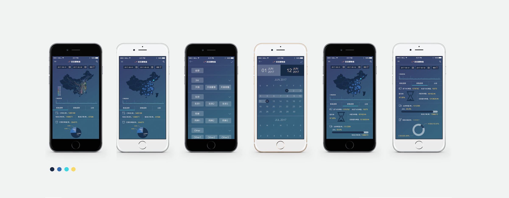

HAIER GROUP CORPORATION
CREATING INFOGRAPHICS WITH HAIER DATA
Haier Group Corporation is a Chinese collective multinational consumer electronics and home appliances company headquartered in Qingdao, Shandong province, China.
I was responsible for the data visualization, infographic design, and user interface design for Haier Brand Centre's Internet Technology Department. I focused on the internal development of RRS.com, Haier's online service and transportation logistics platform. The Internet Technology board wanted its brand identity to be coherent and easy to understand with little written information, yet professional and complex enough to display all needed data. I used my design analytical skills to tell compelling stories visually with complex logistical data.
Haier RRS.com Brand Identity
Step 1: Research & Learning About Haier's RRS Data Collection and Logistics
Since I started off not too familiar with RRS.com, Haier’s comprehensive service brand. Combined with my lack of complete fluency in Chinese, this was definitely the most difficult step to pass by…
So, a little bit of background RRS.com and its three sub-components:
RRS is Haier’s comprehensive service brand, logistics, and health and industry platform. RRS.com was started by Nissan Logistics, one of the largest brand of logistics in China with over 90,000 vehicles and 180,000 service providers to provide the speediest transportation to anywhere within China. Its motto is stated as “You Need, I’ll deliver.”
RRS Transportation: China’s big logistics leader
RRS Transportation insists on the best user experienced, relying on the convergence of warehousing, distribution network, service network, and information network. The platform provides supply chain service for all household appliances, furniture, fitness equipment etc.
RRS Home: China’s professional community life service platform
RRS Home focuses on its “community butler service system to meet healthy family services standards.
RRS Health: China’s home health solution platform
RRS Health focuses on providing customers with healthy water, air, and other health solutions. The platform is committed to China’s urban and rural residents.
Understanding the structure and process of RRS helped me immensely in order to create user-centered and impactful designs. With the help of my advisor, I was able to understand RRS’s complex internal data.
Selection of UI Data Visualization Web Page Design

Step 2: Brainstorming
Sketching:
I first started jotting down and sketching out some initial ideas. However, I was incredibly frustrated since this was my first time learning how to turn complex numbers and data into pictorial form visually appealing designs.
Referencing:
I quickly discovered some helpful sites to learn from and get inspired.
Some example reference sites: huaban.com, 58pic.com, echarts.baidu.com
Selection of UI Data Visualization App Design

Step 3: Prototyping, Wire Framing & Iterating
After having some initial ideas and sketches, I moved to realize some of these ideas. I used a combination of Adobe Photoshop, Illustrator, and Axure RP to both demonstrate mock-ups two-dimensionally and interactively.
The hardest part of this process would still be trying to visually represent data without taking away any information.
Another drawback I’ve noticed was the difference artistic preference between the Western culture that I grew up in and the standards of the Asian culture. Although I value simplicity a great amount, I often found myself creating very complex designs in order to include all information.


Step 4: Feedback
What I Learned
After multiple iterations, I was ready to receive feedback. I sat in probably one of the most intimidating conference meetings of my life where I was told to walk through my every design decision in front of 10+ people.Another drawback I’ve noticed was the difference artistic preference between the Western culture that I grew up in and the standards of the Asian culture. Although I value simplicity a great amount, I often found myself creating very complex designs in order to include all information.
After a summer of trying to understand and visualize a sea of numbers and data, I started to value the importance of communication without words. It forced me to think different, critically, and creatively in order to create truly impactful designs.